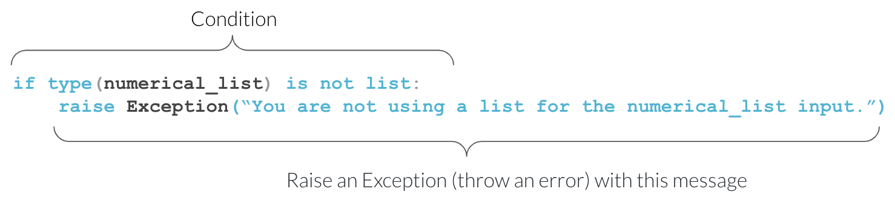

Defensive programming: Code written in such a way that if errors do occur, they are handled in a graceful, fast and informative manner.
Exceptions: Used in Defensive programming to disrupts the normal flow of instructions. When Python encounters code that it cannot execute, it will throw an exception.
def exponent_a_list(numerical_list, exponent=2): new_exponent_list =list()for number in numerical_list: new_exponent_list.append(number ** exponent)return new_exponent_list
TypeError: unsupported operand type(s) for ** or pow(): 'str' and 'int'
Detailed traceback:
File "<string>", line 1, in <module>
File "<string>", line 4, in exponent_a_list
Exceptions
def exponent_a_list(numerical_list, exponent=2):iftype(numerical_list) isnotlist:raiseException("You are not using a list for the numerical_list input.") new_exponent_list =list()for number in numerical_list: new_exponent_list.append(number ** exponent)return new_exponent_list
Exception: You are not using a list for the numerical_list input.
Detailed traceback:
File "<string>", line 1, in <module>
File "<string>", line 4, in exponent_a_list
(Note that in the interest of avoiding new syntax, we are using a simple way of checking if an object is of a certain data type. For a more robust approach see here.)

Why raise Exceptions
iftype(numerical_list) isnotlist:raiseException("You are not using a list for the numerical_list input.")
Exception types
iftype(numerical_list) isnotlist:raiseException("You are not using a list for the numerical_list input.")
iftype(numerical_list) isnotlist:raiseException("You are not using a list for the numerical_list input.")
def exponent_a_list(numerical_list, exponent=2):iftype(numerical_list) isnotlist:raiseTypeError("You are not using a list for the numerical_list input.") new_exponent_list =list()for number in numerical_list: new_exponent_list.append(number ** exponent)return new_exponent_list
TypeError: You are not using a list for the numerical_list input.
Detailed traceback:
File "<string>", line 1, in <module>
File "<string>", line 4, in exponent_a_list
For the full list of exception types take a look at this resource.
Exception Documentation
def exponent_a_list(numerical_list, exponent=2):""" Creates a new list containing specified exponential values of the input list. Parameters ---------- numerical_list : list The list from which to calculate exponential values from exponent : int or float, optional The exponent value (the default is 2, which implies the square). Returns ------- new_exponent_list : list A new list containing the exponential value specified of each of the elements from the input list Raises ------ TypeError If the input argument numerical_list is not of type list Examples -------- >>> exponent_a_list([1, 2, 3, 4]) [1, 4, 9, 16] """